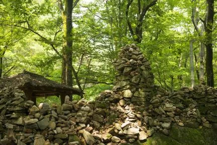
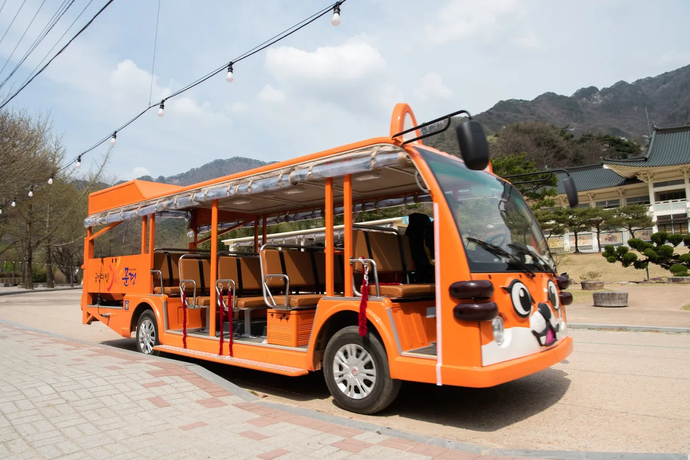
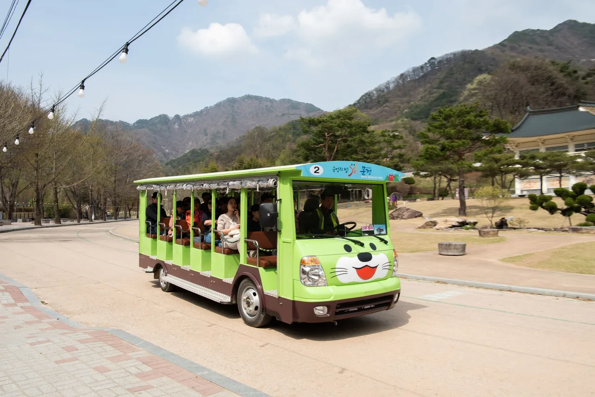

▲ 문경새재 조령관문. 1708년 완공된 세 관문(주흘관·조곡관·조령관) 중 마지막 관문이다 ⓒ 국가유산청 국가유산포털
1. 입장료는 2008년부터 무료다
문경새재도립공원 입장료는 없습니다. 2008년 4월 10일 시행 이후로 계속 무료이고, 입장 시간 제한도 없습니다. 탐방로는 상시 개방입니다.
새재 자체는 백두대간 조령산 산마루를 넘는 옛 고갯길입니다. 조선시대 영남과 한양을 잇는 관문이었고, 임진왜란 이후 국방 요새로 삼기 위해 세 개의 관문을 세웠습니다. 주흘관(제1관문)·조곡관(제2관문)·조령관(제3관문)은 1708년(숙종 34년)에 완공됐습니다.
2. 주차장, '무료'와 요금표가 같이 붙어 있다
문경새재 주차장 안내에는 '이용요금 : 무료'라고 적혀 있습니다. 운영시간은 오전 8시 30분부터 오후 5시 30분까지이고, 매년 1월 1일과 설날·추석 당일에는 무료 개방된다는 문구도 별도로 붙어 있습니다.
그런데 같은 페이지 안에 주차요금표가 함께 실려 있습니다. 버스·25인승 이상 승합은 1일 4,000원, 승용은 2,000원, 경차는 1,000원입니다. '무료'라는 문구와 유료 요금표가 나란히 있는 셈이라, 방문 전 관리사무소(054-571-4358)에 확인하는 편이 헷갈리지 않습니다.

▲ 문경새재 숲길. 나무 그늘 아래로 이어지는 완만한 흙길이 대부분이다 ⓒ 국가유산청 국가유산포털
3. 전동차 — 요금 내면 상품권으로 돌려받는다
제1관문과 제2관문 사이는 전동차로 이동할 수 있습니다. 편도 요금은 어른 2,000원, 청소년·군인 800원, 어린이 500원입니다.
| 구분 | 요금 | 기준 |
|---|---|---|
| 어른 | 2,000원 | 19세 이상 |
| 청소년 · 군인 | 800원 | 13~18세, 정복 착용 하사 이하 |
| 어린이 | 500원 | 4~12세 |
| 영유아 | 무료 | 0~3세 |
장애인(1~3급)과 보호자 1인은 무료로 탑승할 수 있습니다. 그리고 어른 요금을 낸 사람에게는 문경사랑상품권 1,000원이나 그에 상당하는 문경시 농·특산품을 지급한다는 조건이 붙어 있습니다. 2,000원을 내면 1,000원어치를 상품권으로 돌려받는 셈입니다.

▲ 문경새재 전동차. 제1관문에서 제2관문 구간을 오간다 ⓒ 문경관광공사

▲ 걷기 힘든 구간이라기보다는 시간을 아끼려는 탐방객이 주로 이용한다 ⓒ 문경관광공사
4. 제1관문부터 제3관문까지, 6.5km
제1관문(주흘관)에서 제3관문(조령관)까지 이어지는 주 탐방로는 총 6.5km입니다. 도보로는 약 2시간 30분이 걸립니다. 경사가 심하지 않고 흙길이 이어져 있어 가벼운 트레킹 코스로도 많이 찾습니다.
중간에 여궁폭포와 조령천이 이어지는 구간이 있고, 옛길박물관도 코스 안쪽에 있습니다. 조선시대 과거를 보러 한양으로 가던 선비들이 넘던 길이라는 점이 이 구간의 상징성입니다.
5. 오픈세트장 — 국내 최대 규모 사극 촬영지
공원 안에는 국내 최대 규모의 사극 전문 촬영장이 있습니다. '태조왕건', '성균관 스캔들', '해를 품은 달', 넷플릭스 '킹덤' 등이 이곳에서 촬영됐습니다.
| 구분 | 어른 | 청소년 · 군인 | 어린이 |
|---|---|---|---|
| 일반 | 2,000원 | 1,000원 | 500원 |
| 문경시민 · 경북투어패스 소지자 | 1,000원 | 500원 | 300원 |
관람 시간은 오전 9시부터 오후 6시까지이고, 11월부터 다음 해 2월까지는 오후 5시에 닫습니다. 휴장일은 1월 1일, 설날·추석 당일, 그리고 시설 점검 기간입니다.
6. 자차 여행자를 위한 정리
첫째, 입장료는 무료지만 주차는 별도로 확인하십시오. '무료'와 요금표가 같은 페이지에 있으니 방문 전 관리사무소에 전화로 확인하는 편이 안전합니다.
둘째, 전동차 요금을 냈다면 문경사랑상품권을 챙기십시오. 매표소에서 따로 안내하지 않으면 놓치기 쉽습니다.
셋째, 6.5km 완주가 부담스럽다면 제2관문까지만 걷고 전동차로 돌아오는 코스도 있습니다. 왕복 완주보다 부담이 훨씬 적습니다.
넷째, 오픈세트장은 문경시민이 아니어도 경북투어패스만 있으면 반값입니다. 인근 다른 관광지와 함께 묶어 다닌다면 미리 챙겨 가는 편이 낫습니다.
정리하면 이렇습니다. 문경새재는 입장료 자체는 확실히 무료입니다. 다만 그 문구만 보고 다른 요금까지 무료라고 넘겨짚으면, 현장에서 다시 계산기를 두드리게 됩니다.